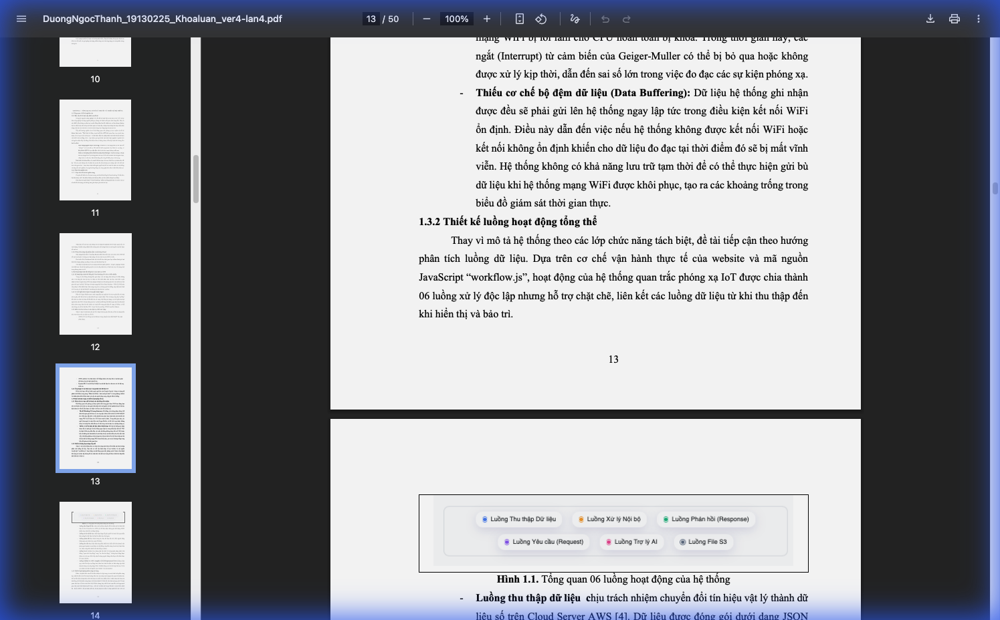
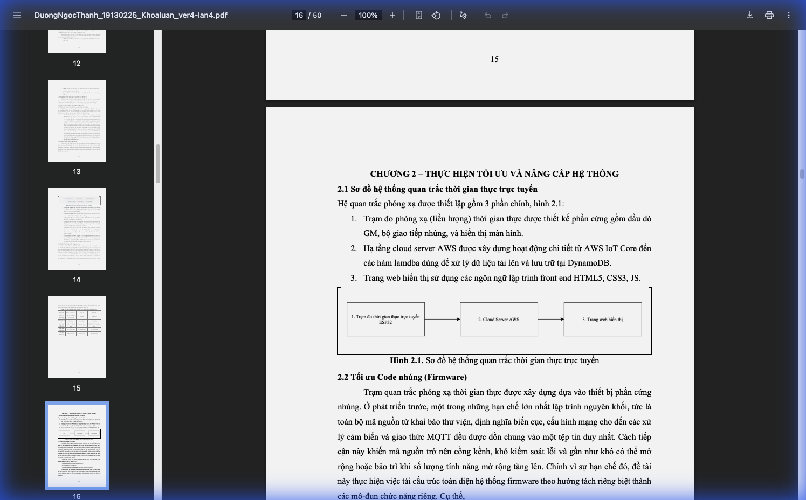
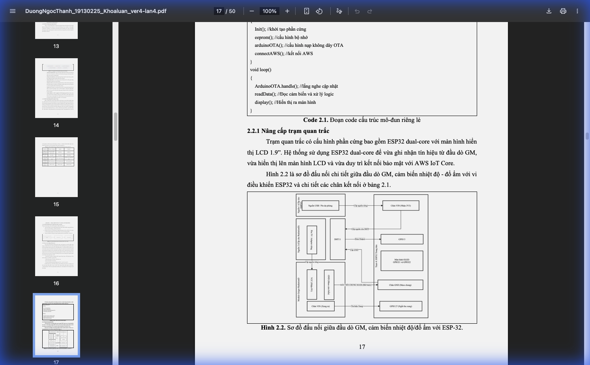
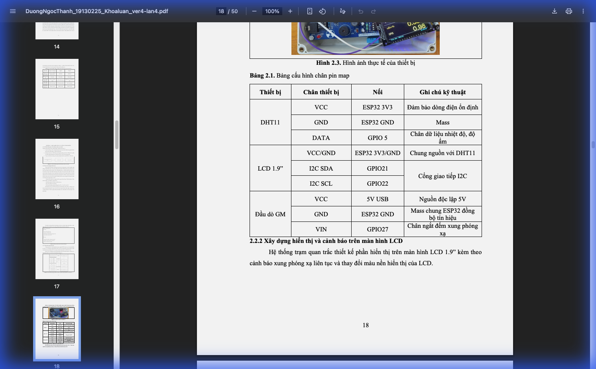
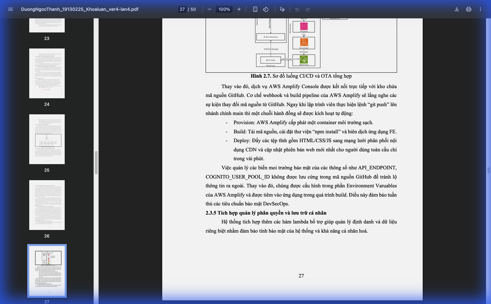
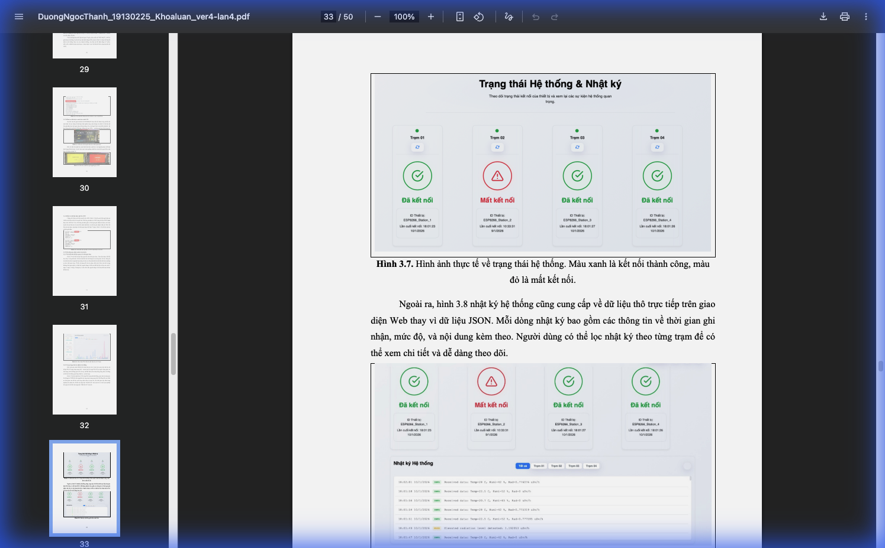
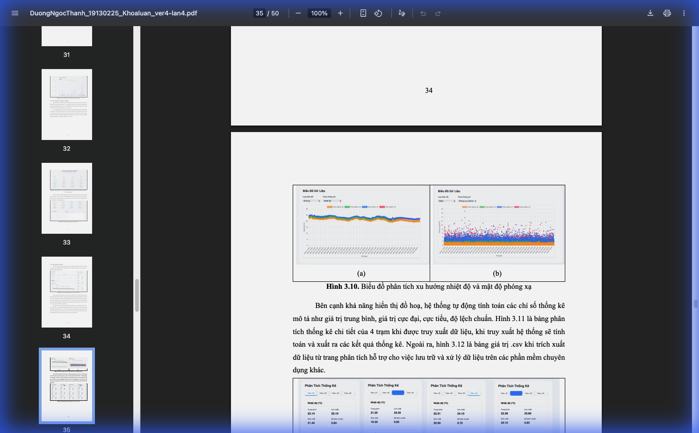
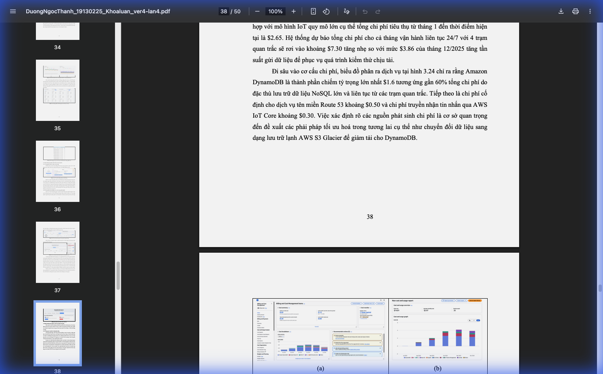

Đại học Quốc gia TP.HCM - Trường ĐH Khoa học Tự nhiên
Khoa Vật lý & Vật lý Kỹ thuật - Bộ môn Vật lý Hạt nhân
TỐI ƯU CODE NHÚNG CHO BỘ ĐIỆN TỬ CỦA HỆ ĐO LIỀU PHÓNG XẠ VÀ NÂNG CẤP WEB HIỂN THỊ THEO THỜI GIAN THỰC
Sinh viên thực hiện
Dương Ngọc Thành
MSSV: 19130225
Giảng viên hướng dẫn
PGS.TS. Võ Hồng Hải
TP. Hồ Chí Minh, Năm 2026
Nội dung trình bày
- Đặt vấn đề – Hạn chế hệ thống cũ
- Giải pháp Firmware – Non-blocking I/O
- Kiến trúc AWS – Serverless
- Web App & AI – Giám sát thông minh
- Kết quả – Hiệu năng & Chi phí

Hình 1.1: Tổng quan 06 luồng hoạt động chính của hệ thống
Đặt vấn đề: Hạn chế hệ thống cũ
Blocking I/O
Sử dụng delay() gây
treo MCU khi mất mạng. Bỏ sót xung phóng xạ.
Mất dữ liệu
Thiếu bộ đệm (buffering). Mất kết nối = Mất dữ liệu vĩnh viễn.
Code nguyên khối
Khó bảo trì, khó mở rộng tính năng mới.
Kiến trúc Tổng quan Hệ thống

Hình 2.1: Sơ đồ hệ thống quan trắc thời gian thực trực tuyến
Phần cứng: Sơ đồ & Thiết bị thực tế

Hình 2.2: Sơ đồ đấu nối GM probe, cảm biến với ESP-32

Hình 2.3: Hình ảnh thực tế thiết bị (Trạm 4)
Giải pháp 1: Tối ưu Firmware
Kỹ thuật Non-blocking I/O
Thay thế delay() bằng millis() + Máy trạng thái (FSM). MCU vừa
đo, vừa gửi tin, vừa hiển thị LCD song song.
Cơ chế Ngắt (Interrupt)
Sử dụng IRAM_ATTR để bắt xung Geiger-Muller tức thì. Đảm bảo độ chính xác
tuyệt đối của số đếm (CPS).
OTA (Over-The-Air)
Cập nhật phần mềm từ xa qua GitHub CDN, không cần cắm dây nạp code.
So sánh Logic Xử lý
❌ Hệ thống Cũ (Blocking)
void loop() {
readSensor();
connectWiFi(); // CHẶN NẾU LỖI
sendData(); // CHẶN
delay(1000); // CHẶN TOÀN BỘ
}
⚠️ MCU bị "đơ" khi mạng lag
✅ Hệ thống Mới (Non-blocking)
void loop() {
ArduinoOTA.handle();
if (millis() - t1 > 1000) readData();
if (millis() - t2 > 7000) publishMQTT();
display(); // Luôn mượt mà
}
// Interrupt chạy ngầm đếm xung
🚀 Đa nhiệm mượt mà
CI/CD & OTA: Cập nhật từ xa

Hình 2.7: Sơ đồ luồng CI/CD và OTA tổng hợp
Giải pháp 2: Kiến trúc Serverless AWS
Trạm Quan Trắc
MQTT Protocol
AWS IoT Core
Broker trung chuyển
AWS Lambda
20 hàm xử lý
DynamoDB
Lưu trữ NoSQL
Giao diện Web Giám sát

Hình 3.7: Giao diện giám sát trạng thái hệ thống (Xanh: Online, Đỏ: Offline)
Phân tích Xu hướng Dữ liệu

Hình 3.10: Biểu đồ phân tích xu hướng nhiệt độ và mật độ phóng xạ theo thời gian
Kết quả Thực nghiệm
Tự động Reset khi mất kết nối
4 trạm 24/7 (DynamoDB 60%)
Khí thải carbon cực thấp
Gửi dữ liệu mỗi 7-8 giây

Hình 3.24: Biểu đồ phân tích chi phí vận hành AWS
Kết luận & Hướng phát triển
Kết quả đạt được
- Hệ thống Full-stack hoàn chỉnh (Hardware - Cloud - Web)
- Khắc phục triệt để lỗi treo máy của hệ thống cũ
- Trải nghiệm người dùng hiện đại với AI Chatbot